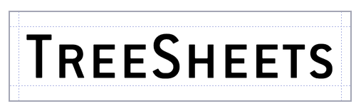
Tutorial & Descrição de recursos
Há três formas de aprender como o TreeSheets funciona:
1. Tutorial embutido no aplicativo:
Experimente a funcionalidade enquanto lê sobre ela, no documento de tutorial que é carregado quando você inicia o programa pela primeira vez (ou pressiona F1).
2. Assista a este vídeo:
William Ranvaud gentilmente fez um vídeo de tutorial:
3. Ou, leia sobre ele nesta página:
[Nota: O texto e as imagens abaixo estão um pouco desatualizados, mas ainda assim devem lhe dar a ideia geral.]
Comece criando um novo arquivo (menu Arquivo/Novo, ou CTRL+N). Não se preocupe com as dimensões da grade, é muito fácil criar e excluir linhas e colunas.
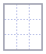
Para inserir texto, simplesmente CliqueComOBotãoEsquerdo em uma célula para selecioná-la, e comece a digitar:
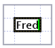
Quando começar a digitar em uma célula selecionada, uma borda fina vai indicar que você está em modo de edição de texto (parecido com planilhas eletrônicas).
Clique em uma linha de grade entre duas células vizinhas. Vai aparecer uma borda grossa:
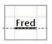
Agora, para inserir uma linha ou coluna naquele local, comece a digitar. Entre as células vizinhas onde você clicou, o TreeSheets vai criar uma nova linha ou coluna:
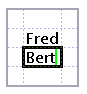
Assim como criamos, também podemos excluir linhas ou colunas clicando em uma linha de grade...
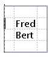
... e então pressionando BACKSPACE (exclui a linha acima, ou a coluna à esquerda) ou DELETE (exclui a linha abaixo, ou a coluna à direita):
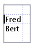
Intuitivamente funciona como um editor de texto, experimente. Não se preocupe com exclusões acidentais, você pode desfazer quantas ações quiser (Editar/Desfazer ou CTRL+Z).
Salvar (Arquivo/Salvar ou CTRL+S, Arquivo/Salvar Como) e Abrir (Arquivo/Abrir ou CTRL+O) funcionam como se espera de qualquer aplicativo de produtividade. Ao iniciar, o TreeSheets carrega automaticamente o último arquivo .cts salvo. Use Arquivo/Exportar visualização como se você precisar usar seus dados fora do TreeSheets.
Isso foi o básico sobre editar uma grade simples, mas a diversão de verdade só começa quando você organiza seus dados com grades dentro de outras grades. Simplesmente selecione uma célula, e use Editar/Inserir Nova Grade ou tecle INSERT:
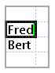
->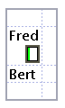
A célula que você selecionou agora tem uma subgrade 1x1. Edite essa célula, e crie algumas células adicionais nessa nova grade para pegar o jeito de como ela funciona em relação à célula "mãe":
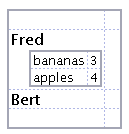
Você pode selecionar múltiplas células simplesmente usando CliqueEArrasteComOBotãoEsquerdo, como se faz nas planilhas. Isso funciona inclusive entre níveis hierárquicos de grades, onde cruzar um limite seleciona automaticamente a grade "filha" inteira:
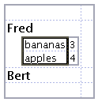
ou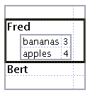
Algumas operações só funcionam em uma única célula (tal como inserir novos dados acima), mas muitas também funcionam em seleções maiores. Por exemplo, você pode usar DELETE para limpar/excluir qualquer subseleção de uma grade, e CTRL+ESQUERDA|DIREITA|CIMA|BAIXO para mover uma seleção dentro de uma grade:
->
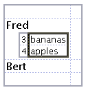
Repare que com toda operação de edição, o redimensionamento ao conteúdo é automático. O TreeSheets torna muito fácil organizar os dados, e assim você tem sempre o layout mais compacto com o uso ideal do espaço. Você pode influenciar quanto espaço qualquer coisa ocupa usando SHIFT+RodaDoMouse com qualquer número de células selecionadas:
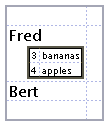
Isso muda o tamanho relativo de uma célula. O tamanho é relativo à profundidade de aninhamento (como você viu, uma grade aninhada já tinha uma fonte menor). Usar tamanho relativo é uma ótima ferramenta para fazer certas coisas importantes (como cabeçalhos) se destacarem e deixar dados menos importantes ainda legíveis, mas bem pequenos e assim ocupando menos espaço. O TreeSheets foi projetado com a filosofia que para conjuntos de dados enormes e complexos você ainda deve poder encolher dados (para até um único pixel por caractere!) em vez de usar quantidades excessivas de espaço que lhe exigiriam muita rolagem de tela. Mas depois que você diminui algo a ponto de deixar ilegível, como fazer para deixar legível/editável de novo? É aqui que entra o recurso de zoom do TreeSheets. Simplesmente faça qualquer seleção, em qualquer nível de aninhamento, e então use CTRL+RodaDoMouse (para a frente):
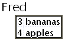
Cada avanço da roda do mouse aumenta um nível de zoom, então mesmo grades muito profundamente aninhadas podem ser alcançadas instantaneamente com um rápido movimento do mouse. E já que tamanhos de texto são relativos, a raiz do que estiver sendo mostrado no momento sempre terá a fonte com o tamanho padrão, tornando-o legível e editável. Esse sistema permite que você crie documentos contendo enormes quantidades de dados onde somente a estrutura geral é visível no nível raiz, mas ainda assim tudo pode ser alcançado rapidamente.
Reduzir o zoom para voltar à raiz é ainda mais fácil já que nem precisa que algo esteja selecionado: simplesmente use CTRL+RodaDoMouse (para trás).
(Qualquer uso da roda do mouse pode ser substituído por PageUp/PageDown, que pode ser mais conveniente em laptops).
O TreeSheets vai mostrar barras de rolagem quando os dados atuais não couberem na tela, mas lhe encoraja a descobrir o quanto é mais fácil trabalhar sem barras de rolagem, encolhendo itens até que eles caibam. Você pode encolher dados menos importantes até ficarem do tamanho de um pixel (!), que aí só serão legíveis aumentando o zoom.
Outra ferramenta para mudar o layout do seu documento é a largura da coluna. O TreeSheets trata cada célula como uma única linha de texto em termos de edição, mas você pode quebrar essa linha de edição em tantas linhas de exibição quanto quiser. Isso é útil para impedir que linhas longas estiquem o layout dos seus dados. Simplesmente use ALT+RodaDoMouse para aumentar ou diminuir a largura da coluna:
originalmente:
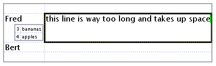
menor:
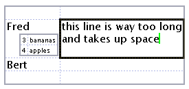
muito pequena:
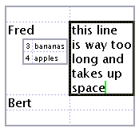
Recortar (Editar/Recortar ou CTRL+X), Copiar (Editar/Copiar ou CTRL+C) e Colar (Editar/Colar ou CTRL+V) funcionam como o esperado, mas ao Colar o destino deve ser uma única célula. Você pode Copiar para outros aplicativos também, com qualquer seleção sendo convertida em linhas de texto e a indentação indicando níveis de hierarquia. Também pode Colar de outros aplicativos, e se algum texto usar indentação para indicar a hierarquia, ao colar no TreeSheets essa estrutura será reproduzida.
Outras funcionalidades interessantes para experimentar:
Use as teclas de seta para mover sua seleção
Importe de XML, ou cole em uma célula um texto ASCII que tenha indentação para criar uma estrutura em árvore de acordo com a indentação
Configure sua fonte favorita para visualizar seus documentos com (Opções/Fonte...)
Você pode adicionar imagens a qualquer célula (Editar/Imagens). A imagem será convenientemente armazenada como parte do arquivo. Depois que tiver carregado uma imagem em uma célula pela primeira vez, você pode copiá-la e colá-la em quantas células do documento quiser. Imagens sempre são exibidas à esquerda de qualquer texto que também for parte da célula (e acima de qualquer subgrade); se você quiser uma orientação diferente, simplesmente ponha o texto e as imagens em células separadas.